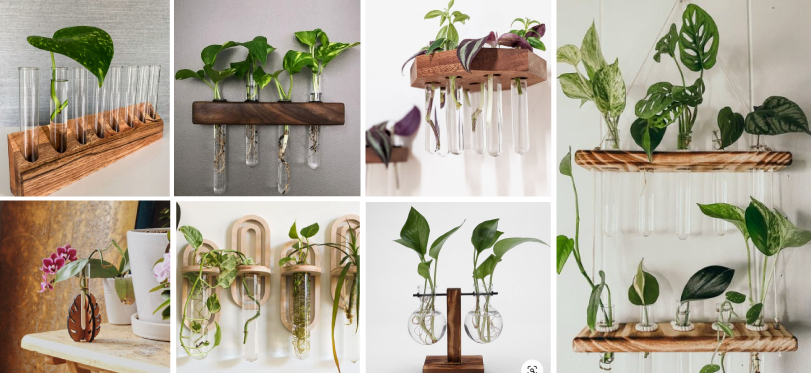

Propagation Station
I love plants, so whenever I think about project ideas, plants often come to my mind. For this final project, I wanted to design something more intricate than just a plant pot. To brainstorm ideas, I used Pinterest, explored lots of pictures of plants, and came across an image of a plant propagation station. I thought this would be a great idea to create a propagation station for my final project. My propagation station is going to be a tool that allows users to propagate multiple plants at the same time. See my inspo board and my sketch below for more details.
Inspo (Propagation station & acrylic sheet art)
Sketch

How it works
The propagation station is going to look like stairs. Each little plate that holds a test tube will be a flower petal shape, and I'm going to lazer cut a acrylic sheet to create this shape. There are 6 flower petals and each petal holds one test tube.

Top & bottom view
When you see this propagation station from the top, it will look like a flower. The shape of the base is also going to be a flower shape as well. I I'm going to create it with a 3D printer.

Stem
It is important to make sure that the stem is stable and the acrylic flower petals can hold test tubes filled with water without tilting. I decided to create Lego inspired round bricks to hold each acrylic plate tight.
Materials
Test tubes: Ordered 9pc clear test tubes from Amazon. Delivered already.
Acrylic sheet: Ordered 6 pack 8x12 inch colored cast acrylic sheet from Amazon. 1/8" thick, translucent. Delivered already.
Tasks
CAD Modeling (Grasshopper): Flower petals
CAD Modeling (Rhino): Lego bricks for stem, base
3D Print: Base and stem
Lazer Cut: Flower petals
Timeline
Nov 21 - 27:
Take measurements and decide the size of each element.
CAD modeling for all parts
Nov 28 - Dec 2:
3D print and lazer cut all parts and assemble them
Dec 3 - Dec 6:
Documentation